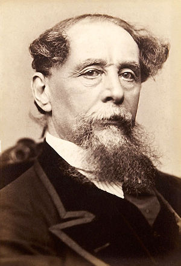

William Shakespeare
From Wikipedia, the free encyclopedia
William Shakespeare (bapt. 26 April 1564 – 23 April 1616) was an English poet, playwright and actor, widely regarded as the greatest writer in the English
language and the world's greatest dramatist. He is often called England's national poet and the "Bard of Avon". His extant works, including collaborations,
consist of approximately 39 plays, 154 sonnets, two long narrative poems, and a few other verses, some of uncertain authorship. His plays have been translated
into every major living language and are performed more often than those of any other playwright.
Shakespeare was born and raised in Stratford-upon-Avon, Warwickshire. At the age of 18, he married Anne Hathaway, with whom he had three children: Susanna
and twins Hamnet and Judith. Sometime between 1585 and 1592, he began a successful career in London as an actor, writer, and part-owner of a playing company
called the Lord Chamberlain's Men, later known as the King's Men. At age 49 (around 1613), he appears to have retired to Stratford, where he died three
years later. Few records of Shakespeare's private life survive; this has stimulated considerable speculation about such matters as his physical
appearance, his sexuality, his religious beliefs, and whether the works attributed to him were written by others. Such theories are often criticised for
failing to adequately note that few records survive of most commoners of the period.
Shakespeare produced most of his known works between 1589 and 1613. His early plays were primarily comedies and histories and are regarded as some of the best
work produced in these genres. Until about 1608, he wrote mainly tragedies, among them Hamlet, Othello, King Lear, and Macbeth, all considered to be among the
finest works in the English language. In the last phase of his life, he wrote tragicomedies (also known as romances) and collaborated with other playwrights.
Many of Shakespeare's plays were published in editions of varying quality and accuracy in his lifetime. However, in 1623, two fellow actors and friends of Shakespeare's,
John Heminges and Henry Condell, published a more definitive text known as the First Folio, a posthumous collected edition of Shakespeare's dramatic works that included all
but two of his plays. The volume was prefaced with a poem by Ben Jonson, in which Jonson presciently hails Shakespeare in a now-famous quote as "not of an age, but
for all time".
Throughout the 20th and 21st centuries, Shakespeare's works have been continually adapted and rediscovered by new movements in scholarship and performance.
His plays remain popular and are studied, performed, and reinterpreted through various cultural and political contexts around the world.
Similar Authors:
 Anne Hathaway
Anne HathawayCharles Dickens
 Oscar Wilde
Oscar Wilde Miguel de Cervantes
Miguel de Cervantes Edgar Allan Poe
Edgar Allan Poe William Wordsworth
William Wordsworth